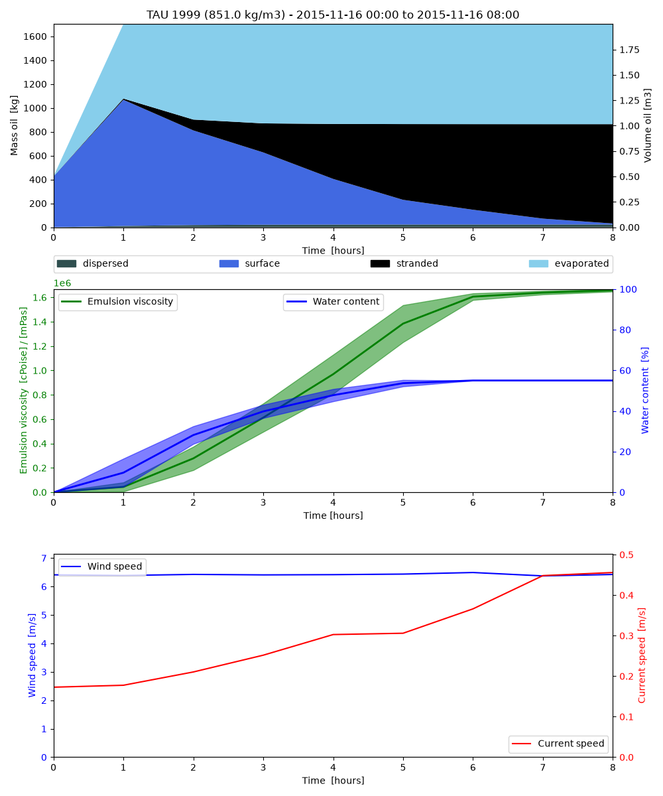
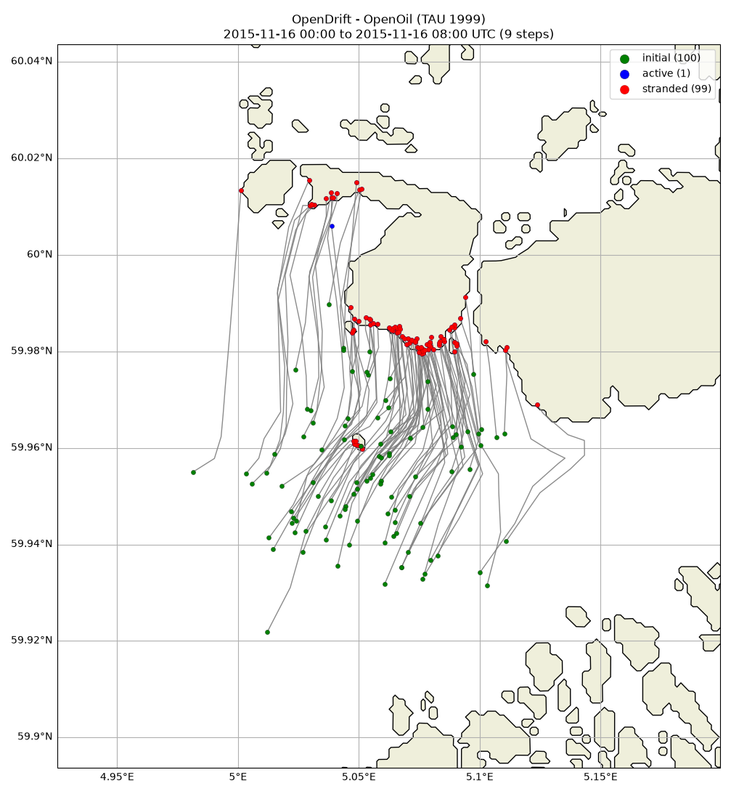

Note
Go to the end to download the full example code.
Openoil sample output netCDF file
import os
from datetime import timedelta
from opendrift import test_data_folder as tdf
from opendrift.readers import reader_netCDF_CF_generic
from opendrift.readers import reader_constant
from opendrift.models.openoil import OpenOil
o = OpenOil(loglevel=20, weathering_model='noaa')
rc = reader_constant.Reader({'x_wind': 5,
'y_wind': 4})
# Arome
reader_arome = reader_netCDF_CF_generic.Reader(tdf +
'16Nov2015_NorKyst_z_surface/arome_subset_16Nov2015.nc')
# Norkyst
reader_norkyst = reader_netCDF_CF_generic.Reader(tdf +
'16Nov2015_NorKyst_z_surface/norkyst800_subset_16Nov2015.nc')
o.add_reader([rc, reader_norkyst, reader_arome])
15:30:01 INFO opendrift:576: OpenDriftSimulation initialised (version 1.14.7 / v1.14.7-5-g21d0173)
15:30:01 INFO opendrift.readers:63: Opening file with xr.open_dataset
15:30:02 INFO opendrift.readers.reader_netCDF_CF_generic:332: Detected dimensions: {'time': 'time', 'x': 'x', 'y': 'y'}
15:30:02 INFO opendrift.readers:63: Opening file with xr.open_dataset
15:30:02 INFO opendrift.readers.reader_netCDF_CF_generic:332: Detected dimensions: {'x': 'X', 'y': 'Y', 'z': 'depth', 'time': 'time'}
Seed oil elements at defined position and time
time = [reader_arome.start_time,
reader_arome.start_time + timedelta(hours=1)]
o.seed_elements(lon=5.05, lat=59.95, radius=1500, number=100,
time=time, z=0, m3_per_hour=2, oil_type='TAU 1999')
15:30:02 INFO opendrift.models.openoil.adios.dirjs:86: Querying ADIOS database for oil: TAU 1999
15:30:02 INFO opendrift.models.openoil.openoil:1717: Using density 851.002835 and viscosity 0.0012492557043601948 of oiltype TAU 1999
15:30:02 INFO opendrift.models.basemodel.environment:203: Adding a global landmask from GSHHG
15:30:06 INFO opendrift.models.basemodel.environment:227: Fallback values will be used for the following variables which have no readers:
15:30:06 INFO opendrift.models.basemodel.environment:230: sea_surface_height: 0.000000
15:30:06 INFO opendrift.models.basemodel.environment:230: upward_sea_water_velocity: 0.000000
15:30:06 INFO opendrift.models.basemodel.environment:230: sea_surface_wave_significant_height: 0.000000
15:30:06 INFO opendrift.models.basemodel.environment:230: sea_surface_wave_stokes_drift_x_velocity: 0.000000
15:30:06 INFO opendrift.models.basemodel.environment:230: sea_surface_wave_stokes_drift_y_velocity: 0.000000
15:30:06 INFO opendrift.models.basemodel.environment:230: sea_surface_wave_period_at_variance_spectral_density_maximum: 0.000000
15:30:06 INFO opendrift.models.basemodel.environment:230: sea_surface_wave_mean_period_from_variance_spectral_density_second_frequency_moment: 0.000000
15:30:06 INFO opendrift.models.basemodel.environment:230: sea_ice_area_fraction: 0.000000
15:30:06 INFO opendrift.models.basemodel.environment:230: sea_ice_x_velocity: 0.000000
15:30:06 INFO opendrift.models.basemodel.environment:230: sea_ice_y_velocity: 0.000000
15:30:06 INFO opendrift.models.basemodel.environment:230: sea_water_temperature: 10.000000
15:30:06 INFO opendrift.models.basemodel.environment:230: sea_water_salinity: 34.000000
15:30:06 INFO opendrift.models.basemodel.environment:230: sea_floor_depth_below_sea_level: 10000.000000
15:30:06 INFO opendrift.models.basemodel.environment:230: ocean_vertical_diffusivity: 0.020000
15:30:06 INFO opendrift.models.basemodel.environment:230: ocean_mixed_layer_thickness: 50.000000
Running model
ncfile = 'openoil_sample_output.nc'
o.run(steps=4*8, time_step=900, time_step_output=3600, outfile=ncfile)
15:30:06 INFO opendrift:1803: Skipping environment variable upward_sea_water_velocity because of condition ['drift:vertical_advection', 'is', False]
15:30:06 INFO opendrift:1814: Storing previous values of element property lon because of condition (('general:coastline_action', 'in', ['stranding', 'previous']), 'or', ('general:seafloor_action', 'in', ['previous']))
15:30:06 INFO opendrift:1814: Storing previous values of element property lat because of condition (('general:coastline_action', 'in', ['stranding', 'previous']), 'or', ('general:seafloor_action', 'in', ['previous']))
15:30:06 INFO opendrift:952: Using existing reader for land_binary_mask to move elements to ocean
15:30:08 INFO opendrift:984: Moving 1 out of 100 points from land to water
15:30:08 INFO opendrift.models.openoil.openoil:692: Oil-water surface tension is 0.030101 Nm
15:30:08 INFO opendrift.models.openoil.openoil:701: Using max water fractions [0.5, 0.6] for temperatures [5.0, 15.0] for oiltype TAU 1999
15:30:08 INFO opendrift.models.openoil.openoil:702: Corresponding max water fraction from GNOME is 0.6321836371465919
15:30:08 INFO opendrift:2111: 2015-11-16 00:00:00 - step 1 of 32 - 25 active elements (0 deactivated)
15:30:08 INFO opendrift:2111: 2015-11-16 00:15:00 - step 2 of 32 - 50 active elements (0 deactivated)
15:30:08 INFO opendrift:2111: 2015-11-16 00:30:00 - step 3 of 32 - 75 active elements (0 deactivated)
15:30:08 INFO opendrift:2111: 2015-11-16 00:45:00 - step 4 of 32 - 100 active elements (0 deactivated)
15:30:08 INFO opendrift:2111: 2015-11-16 01:00:00 - step 5 of 32 - 100 active elements (0 deactivated)
15:30:10 INFO opendrift:2111: 2015-11-16 01:15:00 - step 6 of 32 - 99 active elements (1 deactivated)
15:30:10 INFO opendrift:2111: 2015-11-16 01:30:00 - step 7 of 32 - 99 active elements (1 deactivated)
15:30:10 INFO opendrift:2111: 2015-11-16 01:45:00 - step 8 of 32 - 95 active elements (5 deactivated)
15:30:10 INFO opendrift:2111: 2015-11-16 02:00:00 - step 9 of 32 - 92 active elements (8 deactivated)
15:30:10 INFO opendrift:2111: 2015-11-16 02:15:00 - step 10 of 32 - 90 active elements (10 deactivated)
15:30:10 INFO opendrift:2111: 2015-11-16 02:30:00 - step 11 of 32 - 87 active elements (13 deactivated)
15:30:10 INFO opendrift:2111: 2015-11-16 02:45:00 - step 12 of 32 - 80 active elements (20 deactivated)
15:30:10 INFO opendrift:2111: 2015-11-16 03:00:00 - step 13 of 32 - 75 active elements (25 deactivated)
15:30:10 INFO opendrift:2111: 2015-11-16 03:15:00 - step 14 of 32 - 72 active elements (28 deactivated)
15:30:10 INFO opendrift:2111: 2015-11-16 03:30:00 - step 15 of 32 - 63 active elements (37 deactivated)
15:30:10 INFO opendrift:2111: 2015-11-16 03:45:00 - step 16 of 32 - 60 active elements (40 deactivated)
15:30:10 INFO opendrift:2111: 2015-11-16 04:00:00 - step 17 of 32 - 53 active elements (47 deactivated)
15:30:10 INFO opendrift:2111: 2015-11-16 04:15:00 - step 18 of 32 - 46 active elements (54 deactivated)
15:30:11 INFO opendrift:2111: 2015-11-16 04:30:00 - step 19 of 32 - 38 active elements (62 deactivated)
15:30:11 INFO opendrift:2111: 2015-11-16 04:45:00 - step 20 of 32 - 35 active elements (65 deactivated)
15:30:11 INFO opendrift:2111: 2015-11-16 05:00:00 - step 21 of 32 - 32 active elements (68 deactivated)
15:30:11 INFO opendrift:2111: 2015-11-16 05:15:00 - step 22 of 32 - 25 active elements (75 deactivated)
15:30:11 INFO opendrift:2111: 2015-11-16 05:30:00 - step 23 of 32 - 21 active elements (79 deactivated)
15:30:11 INFO opendrift:2111: 2015-11-16 05:45:00 - step 24 of 32 - 17 active elements (83 deactivated)
15:30:11 INFO opendrift:2111: 2015-11-16 06:00:00 - step 25 of 32 - 16 active elements (84 deactivated)
15:30:11 INFO opendrift:2111: 2015-11-16 06:15:00 - step 26 of 32 - 15 active elements (85 deactivated)
15:30:11 INFO opendrift:2111: 2015-11-16 06:30:00 - step 27 of 32 - 13 active elements (87 deactivated)
15:30:11 INFO opendrift:2111: 2015-11-16 06:45:00 - step 28 of 32 - 10 active elements (90 deactivated)
15:30:11 INFO opendrift:2111: 2015-11-16 07:00:00 - step 29 of 32 - 7 active elements (93 deactivated)
15:30:11 INFO opendrift:2111: 2015-11-16 07:15:00 - step 30 of 32 - 6 active elements (94 deactivated)
15:30:11 INFO opendrift:2111: 2015-11-16 07:30:00 - step 31 of 32 - 3 active elements (97 deactivated)
15:30:12 INFO opendrift:2111: 2015-11-16 07:45:00 - step 32 of 32 - 1 active elements (99 deactivated)
Print and plot results
o.plot_oil_budget()
o.plot()


(<GeoAxes: title={'center': 'OpenDrift - OpenOil (TAU 1999)\n2015-11-16 00:00 to 2015-11-16 08:00 UTC (9 steps)'}>, <Figure size 1007.42x1100 with 1 Axes>)
ncdump of the output file
from subprocess import check_output
args = [ "ncdump", "-h", ncfile ]
ncdump = check_output(args).decode().strip()
print(ncdump)
# Cleaning up
os.remove(ncfile)
netcdf openoil_sample_output {
dimensions:
trajectory = 100 ;
time = 9 ;
variables:
int status(trajectory, time) ;
status:_FillValue = 2147483647 ;
status:valid_range = 0, 1 ;
status:flag_values = 0, 1 ;
status:flag_meanings = "active stranded" ;
int moving(trajectory, time) ;
moving:_FillValue = 2147483647 ;
moving:minval = 0 ;
moving:maxval = 1 ;
float age_seconds(trajectory, time) ;
age_seconds:_FillValue = NaNf ;
age_seconds:units = "s" ;
age_seconds:minval = 0.f ;
age_seconds:maxval = 27000.f ;
int origin_marker(trajectory, time) ;
origin_marker:_FillValue = 2147483647 ;
origin_marker:unit = "" ;
origin_marker:description = "An integer kept constant during the simulation. Different values may be used for different seedings, to separate elements during analysis. With GUI, only a single seeding is possible." ;
origin_marker:flag_values = 0 ;
origin_marker:flag_meanings = "Seed_0" ;
origin_marker:minval = 0 ;
origin_marker:maxval = 0 ;
float lon(trajectory, time) ;
lon:_FillValue = NaNf ;
lon:units = "degrees_east" ;
lon:standard_name = "longitude" ;
lon:long_name = "longitude" ;
lon:axis = "X" ;
lon:minval = 4.981464f ;
lon:maxval = 5.143353f ;
float lat(trajectory, time) ;
lat:_FillValue = NaNf ;
lat:units = "degrees_north" ;
lat:standard_name = "latitude" ;
lat:long_name = "latitude" ;
lat:axis = "Y" ;
lat:minval = 59.92179f ;
lat:maxval = 60.01548f ;
float z(trajectory, time) ;
z:_FillValue = NaNf ;
z:units = "m" ;
z:standard_name = "z" ;
z:long_name = "vertical position" ;
z:axis = "Z" ;
z:positive = "up" ;
z:minval = 0.f ;
z:maxval = 0.f ;
float wind_drift_factor(trajectory, time) ;
wind_drift_factor:_FillValue = NaNf ;
wind_drift_factor:units = "%" ;
wind_drift_factor:description = "Elements at the ocean surface are moved by this fraction of the wind vector, in addition to currents and Stokes drift" ;
wind_drift_factor:minval = 0.03f ;
wind_drift_factor:maxval = 0.03f ;
float current_drift_factor(trajectory, time) ;
current_drift_factor:_FillValue = NaNf ;
current_drift_factor:units = "1" ;
current_drift_factor:description = "Elements are moved with this fraction of the current vector, in addition to currents and Stokes drift" ;
current_drift_factor:minval = 1.f ;
current_drift_factor:maxval = 1.f ;
float terminal_velocity(trajectory, time) ;
terminal_velocity:_FillValue = NaNf ;
terminal_velocity:units = "m/s" ;
terminal_velocity:description = "Terminal rise/sinking velocity (buoyancy) in the ocean column" ;
terminal_velocity:minval = 0.f ;
terminal_velocity:maxval = 0.107833f ;
float mass_oil(trajectory, time) ;
mass_oil:_FillValue = NaNf ;
mass_oil:units = "kg" ;
mass_oil:minval = 8.155731f ;
mass_oil:maxval = 17.02006f ;
float viscosity(trajectory, time) ;
viscosity:_FillValue = NaNf ;
viscosity:units = "m2/s" ;
viscosity:description = "Kinematic viscosity of oil (emulsion)" ;
viscosity:minval = 0.001249256f ;
viscosity:maxval = 1.762864f ;
float density(trajectory, time) ;
density:_FillValue = NaNf ;
density:units = "kg/m^3" ;
density:minval = 851.0028f ;
density:maxval = 947.7759f ;
float bulltime(trajectory, time) ;
bulltime:_FillValue = NaNf ;
bulltime:units = "s" ;
bulltime:minval = 0.f ;
bulltime:maxval = 0.f ;
float interfacial_area(trajectory, time) ;
interfacial_area:_FillValue = NaNf ;
interfacial_area:units = "m2" ;
interfacial_area:minval = 0.f ;
interfacial_area:maxval = 1141500.f ;
float mass_dispersed(trajectory, time) ;
mass_dispersed:_FillValue = NaNf ;
mass_dispersed:units = "kg" ;
mass_dispersed:minval = 0.f ;
mass_dispersed:maxval = 0.3321804f ;
float mass_evaporated(trajectory, time) ;
mass_evaporated:_FillValue = NaNf ;
mass_evaporated:units = "kg" ;
mass_evaporated:minval = 0.f ;
mass_evaporated:maxval = 8.568908f ;
float mass_biodegraded(trajectory, time) ;
mass_biodegraded:_FillValue = NaNf ;
mass_biodegraded:units = "kg" ;
mass_biodegraded:minval = 0.f ;
mass_biodegraded:maxval = 0.f ;
float biodegradation_half_time_droplet(trajectory, time) ;
biodegradation_half_time_droplet:_FillValue = NaNf ;
biodegradation_half_time_droplet:units = "Days" ;
biodegradation_half_time_droplet:description = "Biodegradation half time in days for submerged oil droplets" ;
biodegradation_half_time_droplet:minval = 1.f ;
biodegradation_half_time_droplet:maxval = 1.f ;
float biodegradation_half_time_slick(trajectory, time) ;
biodegradation_half_time_slick:_FillValue = NaNf ;
biodegradation_half_time_slick:units = "Days" ;
biodegradation_half_time_slick:description = "Biodegradation half time in days for surface oil slick" ;
biodegradation_half_time_slick:minval = 3.f ;
biodegradation_half_time_slick:maxval = 3.f ;
float fraction_evaporated(trajectory, time) ;
fraction_evaporated:_FillValue = NaNf ;
fraction_evaporated:units = "%" ;
fraction_evaporated:minval = 0.f ;
fraction_evaporated:maxval = 0.5109257f ;
float water_fraction(trajectory, time) ;
water_fraction:_FillValue = NaNf ;
water_fraction:units = "%" ;
water_fraction:minval = 0.f ;
water_fraction:maxval = 0.55f ;
float oil_film_thickness(trajectory, time) ;
oil_film_thickness:_FillValue = NaNf ;
oil_film_thickness:units = "m" ;
oil_film_thickness:minval = 0.001f ;
oil_film_thickness:maxval = 0.001f ;
float diameter(trajectory, time) ;
diameter:_FillValue = NaNf ;
diameter:units = "m" ;
diameter:minval = 0.f ;
diameter:maxval = 0.002603952f ;
float x_sea_water_velocity(trajectory, time) ;
x_sea_water_velocity:_FillValue = NaNf ;
x_sea_water_velocity:minval = -0.4167673f ;
x_sea_water_velocity:maxval = 0.1973607f ;
float y_sea_water_velocity(trajectory, time) ;
y_sea_water_velocity:_FillValue = NaNf ;
y_sea_water_velocity:minval = -0.1364768f ;
y_sea_water_velocity:maxval = 0.6068177f ;
float x_wind(trajectory, time) ;
x_wind:_FillValue = NaNf ;
x_wind:minval = 3.613704f ;
x_wind:maxval = 6.447049f ;
float y_wind(trajectory, time) ;
y_wind:_FillValue = NaNf ;
y_wind:minval = 2.56165f ;
y_wind:maxval = 5.502532f ;
float sea_surface_height(trajectory, time) ;
sea_surface_height:_FillValue = NaNf ;
sea_surface_height:minval = 0.f ;
sea_surface_height:maxval = 0.f ;
float sea_surface_wave_significant_height(trajectory, time) ;
sea_surface_wave_significant_height:_FillValue = NaNf ;
sea_surface_wave_significant_height:minval = 0.5444739f ;
sea_surface_wave_significant_height:maxval = 1.538757f ;
float sea_surface_wave_stokes_drift_x_velocity(trajectory, time) ;
sea_surface_wave_stokes_drift_x_velocity:_FillValue = NaNf ;
sea_surface_wave_stokes_drift_x_velocity:minval = 0.f ;
sea_surface_wave_stokes_drift_x_velocity:maxval = 0.f ;
float sea_surface_wave_stokes_drift_y_velocity(trajectory, time) ;
sea_surface_wave_stokes_drift_y_velocity:_FillValue = NaNf ;
sea_surface_wave_stokes_drift_y_velocity:minval = 0.f ;
sea_surface_wave_stokes_drift_y_velocity:maxval = 0.f ;
float sea_surface_wave_period_at_variance_spectral_density_maximum(trajectory, time) ;
sea_surface_wave_period_at_variance_spectral_density_maximum:_FillValue = NaNf ;
sea_surface_wave_period_at_variance_spectral_density_maximum:minval = 0.f ;
sea_surface_wave_period_at_variance_spectral_density_maximum:maxval = 0.f ;
float sea_surface_wave_mean_period_from_variance_spectral_density_second_frequency_moment(trajectory, time) ;
sea_surface_wave_mean_period_from_variance_spectral_density_second_frequency_moment:_FillValue = NaNf ;
sea_surface_wave_mean_period_from_variance_spectral_density_second_frequency_moment:minval = 4.019927f ;
sea_surface_wave_mean_period_from_variance_spectral_density_second_frequency_moment:maxval = 6.757945f ;
float sea_ice_area_fraction(trajectory, time) ;
sea_ice_area_fraction:_FillValue = NaNf ;
sea_ice_area_fraction:minval = 0.f ;
sea_ice_area_fraction:maxval = 0.f ;
float sea_ice_x_velocity(trajectory, time) ;
sea_ice_x_velocity:_FillValue = NaNf ;
sea_ice_x_velocity:minval = 0.f ;
sea_ice_x_velocity:maxval = 0.f ;
float sea_ice_y_velocity(trajectory, time) ;
sea_ice_y_velocity:_FillValue = NaNf ;
sea_ice_y_velocity:minval = 0.f ;
sea_ice_y_velocity:maxval = 0.f ;
float sea_water_temperature(trajectory, time) ;
sea_water_temperature:_FillValue = NaNf ;
sea_water_temperature:minval = 10.f ;
sea_water_temperature:maxval = 283.15f ;
float sea_water_salinity(trajectory, time) ;
sea_water_salinity:_FillValue = NaNf ;
sea_water_salinity:minval = 34.f ;
sea_water_salinity:maxval = 34.f ;
float sea_floor_depth_below_sea_level(trajectory, time) ;
sea_floor_depth_below_sea_level:_FillValue = NaNf ;
sea_floor_depth_below_sea_level:minval = 10000.f ;
sea_floor_depth_below_sea_level:maxval = 10000.f ;
float ocean_vertical_diffusivity(trajectory, time) ;
ocean_vertical_diffusivity:_FillValue = NaNf ;
ocean_vertical_diffusivity:minval = 0.02f ;
ocean_vertical_diffusivity:maxval = 0.02f ;
float land_binary_mask(trajectory, time) ;
land_binary_mask:_FillValue = NaNf ;
land_binary_mask:minval = 0.f ;
land_binary_mask:maxval = 0.f ;
float ocean_mixed_layer_thickness(trajectory, time) ;
ocean_mixed_layer_thickness:_FillValue = NaNf ;
ocean_mixed_layer_thickness:minval = 50.f ;
ocean_mixed_layer_thickness:maxval = 50.f ;
int trajectory(trajectory) ;
trajectory:cf_role = "trajectory_id" ;
double time(time) ;
time:standard_name = "time" ;
time:long_name = "time" ;
time:units = "seconds since 1970-01-01" ;
time:calendar = "proleptic_gregorian" ;
// global attributes:
:Conventions = "CF-1.11, ACDD-1.3" ;
:standard_name_vocabulary = "CF Standard Name Table v85" ;
:featureType = "trajectory" ;
:title = "OpenDrift trajectory simulation" ;
:summary = "Output from simulation with OpenDrift framework" ;
:keywords = "trajectory, drift, lagrangian, simulation" ;
:history = "Created 2025-12-10 15:30:06.593156" ;
:date_created = "2025-12-10T15:30:06.593163" ;
:source = "Output from simulation with OpenDrift" ;
:model_url = "https://github.com/OpenDrift/opendrift" ;
:opendrift_class = "OpenOil" ;
:opendrift_module = "opendrift.models.openoil.openoil" ;
:readers = "odict_keys([\'constant_reader\', \'/root/project/tests/test_data/16Nov2015_NorKyst_z_surface/norkyst800_subset_16Nov2015.nc\', \'/root/project/tests/test_data/16Nov2015_NorKyst_z_surface/arome_subset_16Nov2015.nc\', \'global_landmask\'])" ;
:time_coverage_start = "2015-11-16 00:00:00" ;
:time_step_calculation = "0:15:00" ;
:time_step_output = "1:00:00" ;
:config_environment\:constant\:x_sea_water_velocity = "None" ;
:config_environment\:fallback\:x_sea_water_velocity = "None" ;
:config_environment\:constant\:y_sea_water_velocity = "None" ;
:config_environment\:fallback\:y_sea_water_velocity = "None" ;
:config_environment\:constant\:x_wind = "None" ;
:config_environment\:fallback\:x_wind = "None" ;
:config_environment\:constant\:y_wind = "None" ;
:config_environment\:fallback\:y_wind = "None" ;
:config_environment\:constant\:sea_surface_height = "None" ;
:config_environment\:fallback\:sea_surface_height = 0LL ;
:config_environment\:constant\:upward_sea_water_velocity = "None" ;
:config_environment\:fallback\:upward_sea_water_velocity = 0LL ;
:config_environment\:constant\:sea_surface_wave_significant_height = "None" ;
:config_environment\:fallback\:sea_surface_wave_significant_height = 0LL ;
:config_environment\:constant\:sea_surface_wave_stokes_drift_x_velocity = "None" ;
:config_environment\:fallback\:sea_surface_wave_stokes_drift_x_velocity = 0LL ;
:config_environment\:constant\:sea_surface_wave_stokes_drift_y_velocity = "None" ;
:config_environment\:fallback\:sea_surface_wave_stokes_drift_y_velocity = 0LL ;
:config_environment\:constant\:sea_surface_wave_period_at_variance_spectral_density_maximum = "None" ;
:config_environment\:fallback\:sea_surface_wave_period_at_variance_spectral_density_maximum = 0LL ;
:config_environment\:constant\:sea_surface_wave_mean_period_from_variance_spectral_density_second_frequency_moment = "None" ;
:config_environment\:fallback\:sea_surface_wave_mean_period_from_variance_spectral_density_second_frequency_moment = 0LL ;
:config_environment\:constant\:sea_ice_area_fraction = "None" ;
:config_environment\:fallback\:sea_ice_area_fraction = 0LL ;
:config_environment\:constant\:sea_ice_x_velocity = "None" ;
:config_environment\:fallback\:sea_ice_x_velocity = 0LL ;
:config_environment\:constant\:sea_ice_y_velocity = "None" ;
:config_environment\:fallback\:sea_ice_y_velocity = 0LL ;
:config_environment\:constant\:sea_water_temperature = "None" ;
:config_environment\:fallback\:sea_water_temperature = 10LL ;
:config_environment\:constant\:sea_water_salinity = "None" ;
:config_environment\:fallback\:sea_water_salinity = 34LL ;
:config_environment\:constant\:sea_floor_depth_below_sea_level = "None" ;
:config_environment\:fallback\:sea_floor_depth_below_sea_level = 10000LL ;
:config_environment\:constant\:ocean_vertical_diffusivity = "None" ;
:config_environment\:fallback\:ocean_vertical_diffusivity = 0.02 ;
:config_environment\:constant\:land_binary_mask = "None" ;
:config_environment\:fallback\:land_binary_mask = "None" ;
:config_environment\:constant\:ocean_mixed_layer_thickness = "None" ;
:config_environment\:fallback\:ocean_mixed_layer_thickness = 50LL ;
:config_general\:use_auto_landmask = "True" ;
:config_drift\:current_uncertainty = 0.05 ;
:config_drift\:current_uncertainty_uniform = 0LL ;
:config_drift\:max_speed = 1.3 ;
:config_readers\:max_number_of_fails = 1LL ;
:config_general\:simulation_name = "" ;
:config_general\:coastline_action = "stranding" ;
:config_general\:coastline_approximation_precision = 0.001 ;
:config_general\:time_step_minutes = 60LL ;
:config_general\:time_step_output_minutes = "None" ;
:config_seed\:ocean_only = "True" ;
:config_seed\:number = 1LL ;
:config_drift\:max_age_seconds = "None" ;
:config_drift\:advection_scheme = "euler" ;
:config_drift\:horizontal_diffusivity = 0LL ;
:config_drift\:profiles_depth = 50LL ;
:config_drift\:wind_uncertainty = 0.5 ;
:config_drift\:relative_wind = "False" ;
:config_drift\:deactivate_north_of = "None" ;
:config_drift\:deactivate_south_of = "None" ;
:config_drift\:deactivate_east_of = "None" ;
:config_drift\:deactivate_west_of = "None" ;
:config_seed\:origin_marker = 0LL ;
:config_seed\:z = 0LL ;
:config_seed\:wind_drift_factor = 0.03 ;
:config_seed\:current_drift_factor = 1LL ;
:config_seed\:terminal_velocity = 0. ;
:config_seed\:oil_film_thickness = 0.001 ;
:config_drift\:vertical_advection = "False" ;
:config_drift\:vertical_advection_at_surface = "False" ;
:config_drift\:water_column_stretching = "False" ;
:config_drift\:vertical_advection_correction = "False" ;
:config_drift\:vertical_mixing = "True" ;
:config_drift\:vertical_mixing_at_surface = "False" ;
:config_vertical_mixing\:timestep = 60LL ;
:config_vertical_mixing\:diffusivitymodel = "environment" ;
:config_vertical_mixing\:background_diffusivity = 1.2e-05 ;
:config_vertical_mixing\:TSprofiles = "False" ;
:config_drift\:wind_drift_depth = 0.1 ;
:config_drift\:stokes_drift = "True" ;
:config_drift\:stokes_drift_profile = "Phillips" ;
:config_drift\:use_tabularised_stokes_drift = "False" ;
:config_drift\:tabularised_stokes_drift_fetch = "25000" ;
:config_general\:seafloor_action = "lift_to_seafloor" ;
:config_drift\:truncate_ocean_model_below_m = "None" ;
:config_seed\:seafloor = "False" ;
:config_seed\:m3_per_hour = 1LL ;
:config_seed\:droplet_size_distribution = "uniform" ;
:config_seed\:droplet_diameter_mu = 0.001 ;
:config_seed\:droplet_diameter_sigma = 0.0005 ;
:config_seed\:droplet_diameter_min_subsea = 0.0005 ;
:config_seed\:droplet_diameter_max_subsea = 0.005 ;
:config_processes\:dispersion = "True" ;
:config_processes\:evaporation = "True" ;
:config_processes\:emulsification = "True" ;
:config_processes\:biodegradation = "False" ;
:config_biodegradation\:method = "Adcroft" ;
:config_processes\:update_oilfilm_thickness = "False" ;
:config_wave_entrainment\:droplet_size_distribution = "Johansen et al. (2015)" ;
:config_wave_entrainment\:entrainment_rate = "Li et al. (2017)" ;
:config_seed\:oil_type = "TAU 1999" ;
:opendrift_version = "1.14.7" ;
:seed_lon = "5.05" ;
:seed_lat = "59.95" ;
:seed_radius = "1500.0" ;
:seed_time = "2015-11-16 00:00:00" ;
:seed_number = "100.0" ;
:seed_z = "0.0" ;
:seed_m3_per_hour = "1.0" ;
:seed_oiltype = "TAU 1999" ;
:seed_geojson = "{\"features\": [], \"type\": \"FeatureCollection\"}" ;
:simulation_time = "2025-12-10 15:30:08.138772" ;
:reader_x_sea_water_velocity = "[\'/root/project/tests/test_data/16Nov2015_NorKyst_z_surface/norkyst800_subset_16Nov2015.nc\']" ;
:reader_y_sea_water_velocity = "[\'/root/project/tests/test_data/16Nov2015_NorKyst_z_surface/norkyst800_subset_16Nov2015.nc\']" ;
:reader_x_wind = "5" ;
:reader_y_wind = "4" ;
:reader_sea_surface_height = "0" ;
:reader_sea_surface_wave_significant_height = "0" ;
:reader_sea_surface_wave_stokes_drift_x_velocity = "0" ;
:reader_sea_surface_wave_stokes_drift_y_velocity = "0" ;
:reader_sea_surface_wave_period_at_variance_spectral_density_maximum = "0" ;
:reader_sea_surface_wave_mean_period_from_variance_spectral_density_second_frequency_moment = "0" ;
:reader_sea_ice_area_fraction = "0" ;
:reader_sea_ice_x_velocity = "0" ;
:reader_sea_ice_y_velocity = "0" ;
:reader_sea_water_temperature = "10" ;
:reader_sea_water_salinity = "34" ;
:reader_sea_floor_depth_below_sea_level = "10000" ;
:reader_ocean_vertical_diffusivity = "0.02" ;
:reader_land_binary_mask = "[\'global_landmask\']" ;
:reader_ocean_mixed_layer_thickness = "50" ;
:time_coverage_end = "2015-11-16 08:00:00" ;
:time_coverage_duration = "P0DT8H0M0S" ;
:time_coverage_resolution = "P0DT0H15M0S" ;
:performance = "--------------------\nReader performance:\n--------------------\nconstant_reader\n 0:00:00.0 total\n 0:00:00.0 preparing\n 0:00:00.0 reading\n 0:00:00.0 masking\n--------------------\n/root/project/tests/test_data/16Nov2015_NorKyst_z_surface/norkyst800_subset_16Nov2015.nc\n 0:00:00.0 total\n 0:00:00.0 preparing\n 0:00:00.0 reading\n 0:00:00.0 interpolation\n 0:00:00.0 interpolation_time\n 0:00:00.0 rotating vectors\n 0:00:00.0 masking\n--------------------\n/root/project/tests/test_data/16Nov2015_NorKyst_z_surface/arome_subset_16Nov2015.nc\n--------------------\nglobal_landmask\n 0:00:01.5 total\n 0:00:00.0 preparing\n 0:00:01.5 reading\n 0:00:00.0 masking\n--------------------\nPerformance:\n 10.4 total time\n 4.9 configuration\n 1.5 preparing main loop\n 1.5 moving elements to ocean\n 3.9 main loop\n 1.1 updating elements\n 0.0 oil weathering\n 0.0 updating viscosities\n 0.0 updating densities\n 0.0 evaporation\n 0.0 emulsification\n 0.0 dispersion\n 1.0 vertical mixing\n 0.0 cleaning up\n--------------------\n" ;
:geospatial_bounds_crs = "EPSG:4326" ;
:geospatial_bounds_vertical_crs = "EPSG:5831" ;
:geospatial_lat_min = 59.92179f ;
:geospatial_lat_max = 60.01548f ;
:geospatial_lat_units = "degrees_north" ;
:geospatial_lat_resolution = "point" ;
:geospatial_lon_min = 4.981464f ;
:geospatial_lon_max = 5.143353f ;
:geospatial_lon_units = "degrees_east" ;
:geospatial_lon_resolution = "point" ;
:runtime = "0:00:10.446144" ;
:geospatial_vertical_min = 0.f ;
:geospatial_vertical_max = 0.f ;
:geospatial_vertical_positive = "up" ;
}
Total running time of the script: (0 minutes 27.530 seconds)